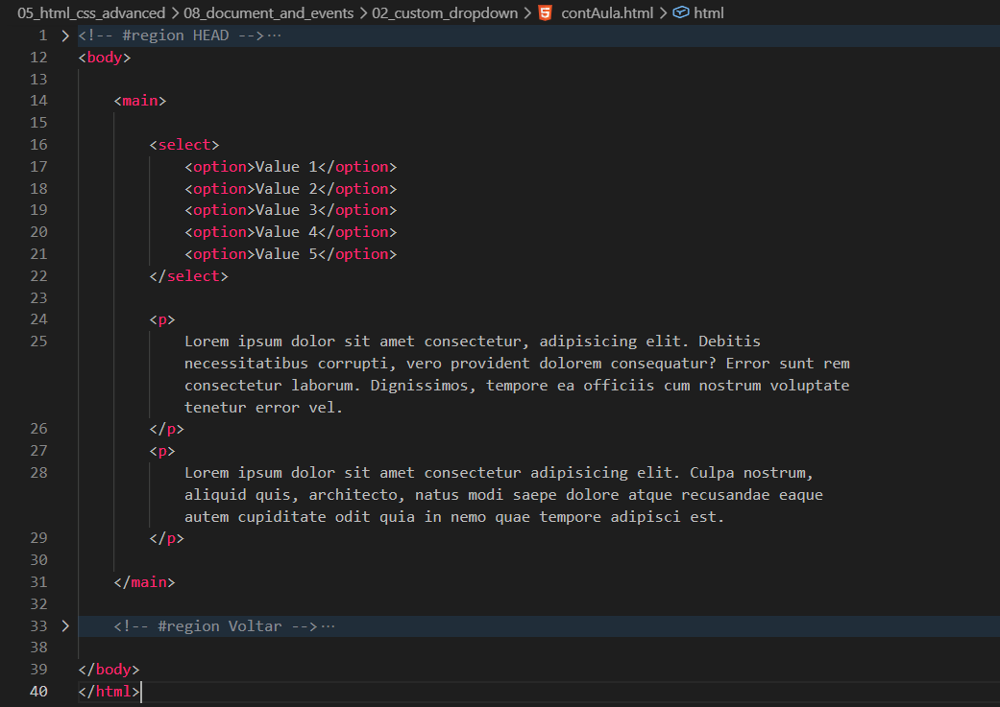
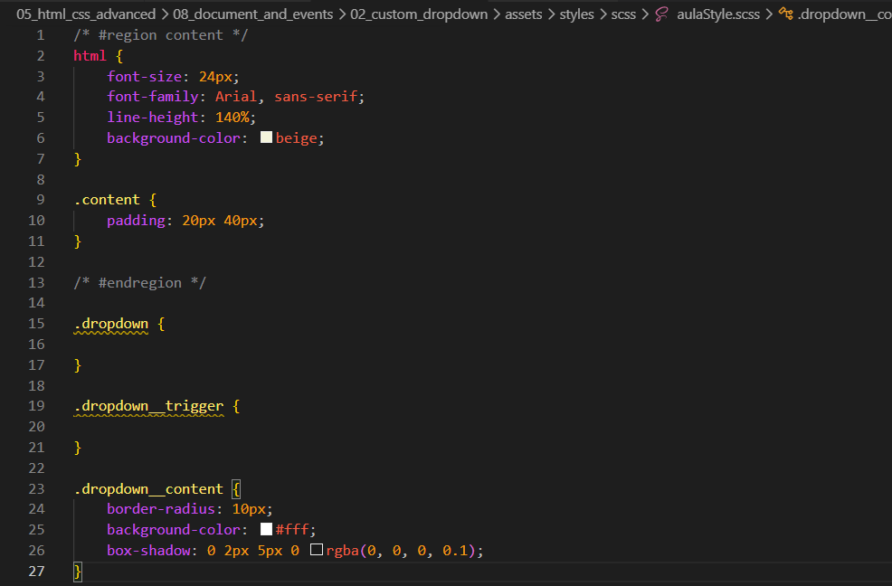
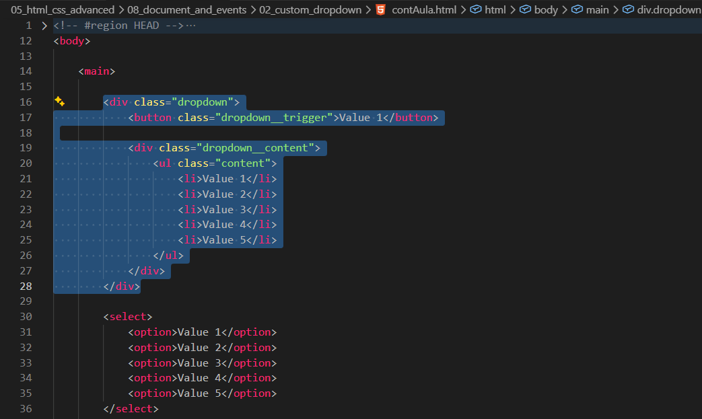
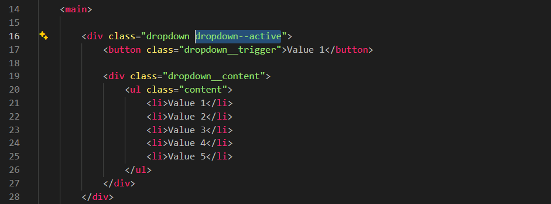
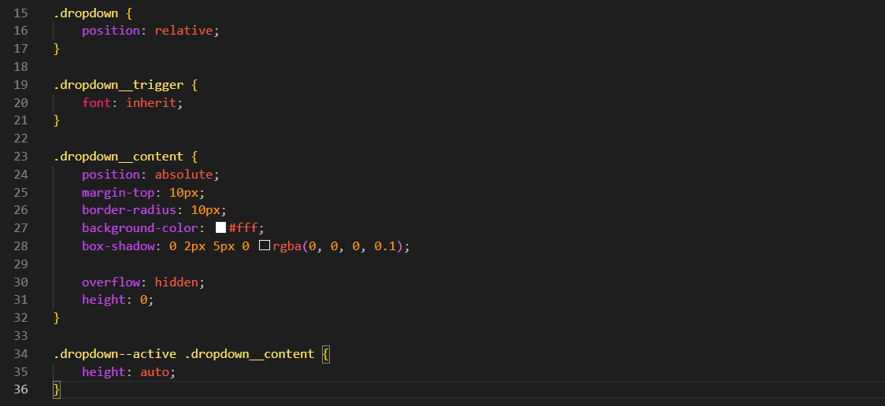
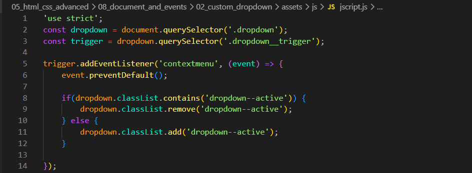
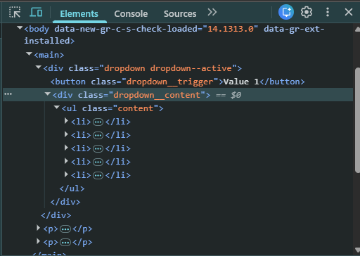
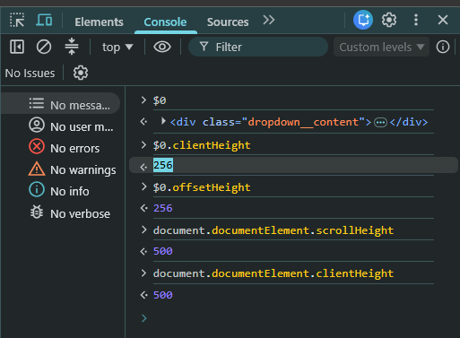
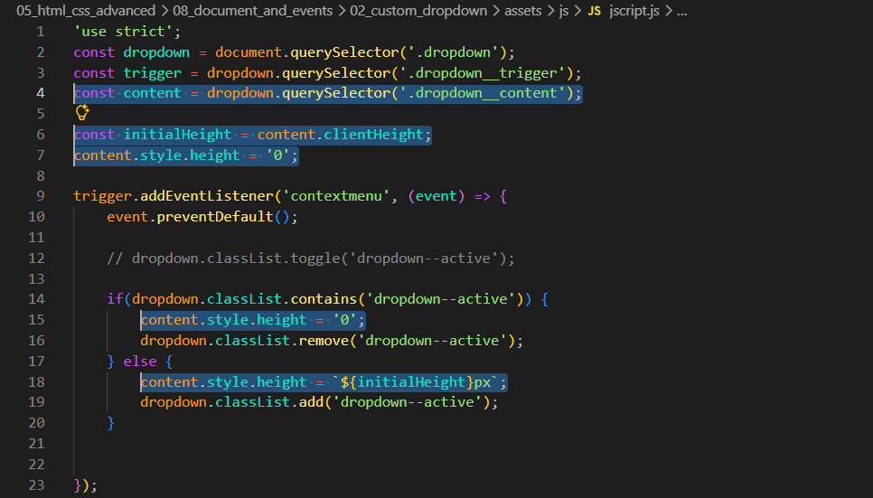
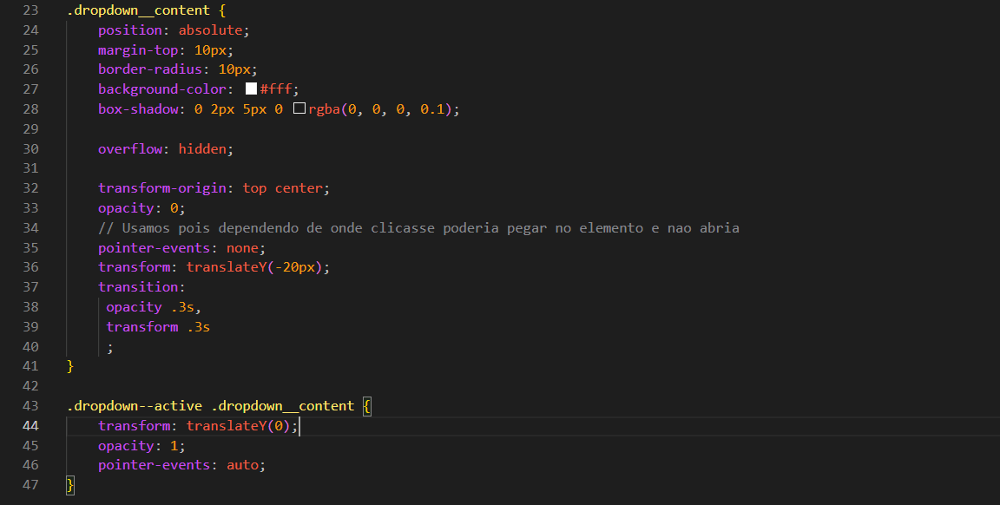

Custom Dropdown
Intro
Aqui veremos como utilizar JavaScript para interagir com o elemento select.
Aqui veremos como utilizar JavaScript para interagir com o elemento select.
HTML:

CSS:

A princípio, quando usamos o elemento select, vemos apenas a opção selecionada. Ao clicar nele e escolher outra opção, ela passa a ser a opção selecionada. É essa alteração que iremos utilizar com o JavaScript, executando uma ação sempre que a opção for alterada.
Iremos comecar criando um novo elemento com a class dropdown em seguida criaremos um button e o nomearemos de dropdown__trigger e como conteudo iremos colocar Value 1.
Apos isso dentro de nosso elemento dropdown logo abaixo do dropdown__trigger iremos adicionar um novo elemento e iremos chama-lo de dropdown__content onde poderemos adicionar uma list com a class content e dentro dela podemos adicionar 5 li cada um contendo um Value. Ficando da seguinte forma:

Feito isso podemos excluir nosso select.
Agora que ja fizemos basicamente quase tudo em nosso HTML, podemos comecar nossa estilizacao.
Iremos fazer com que nosso trigger herde todos os estilos de texto. Para isso usamos a propriedade font: inherit.
Iremos tambem afastar um pouco o conteudo do proprio botao, para isso iremos em nosso dropdown__content e podemos adicionar um margin-top: 10px; feito isso, agora nosso conteudo oculpa espaco na pagina. Para isso iremos ao nosso dropdown.
Em nosso dropdown podemos usar um position: relative; e em nosso dropdown__content adicionamos um position: absolute;
Ao fazermos isso nossa lista ira ficar acima do texto. Iremos esconde-lo usando um height: 0; e um overflow: hidden; em nosso dropdown__content com isso tudo que nao couber sera ocultado.
Em nosso elemento dropdown iremos adicionar um modificador dropdown--active, para podermos personaliza-lo quando ele estiver ativo. Ficando da seguinte forma:

Quando nosso dropdown estivar em --active queremos que a lista seja exibida e talvez o trigger seja estilizado de uma forma diferente.
Agora iremos selecionar nosso .dropdown--active faremos com que o conteudo dentro dele no caso .dropdown__content deve ter sua altura padrao, ficando da seguinte forma toda nossa estilizacao:

Feito isso agora podemos remover a class --active de nosso HTML para que ela seja adicionado e removida por um evento, para isso iremos para nosso JS.

Criamos uma variavel const para que ela possa selecionar o elementoo que desejamos no caso ela ira selecionar nosso elemento .dropdown
Em seguida criamos outra variavel a trigger que usara a variavel dropdown para selecionarmos o elemento .dropdown__trigger.
Criamos um evento utilizando nossa varivel trigger pois ela esta selecionando nosso elemento que desejamos fazer o evento. Para isso adicionamos o addEventListenner, e usamos o 'contextmenu' e como parametro usamos o (event) que sera usado para removermos o menu que aparece quando clicamos com o botao direito.
Em seguida seguimos para oque nosso codigo ira fazer com esse evento, no caso precisamos de uma condicional, ja que iremos adicionar um novo elemento se ele nao tiver e se tiver ira remover.
Com o dropdown.classList.container('dropdown--active'); .Ira veriricar se temos a class dropdown--active em nosso elemento.
dropdown.classList.remove('dropdown--active'); .Ira remover a class.
dropdown.classList.add('dropdown--active'); .Ira adicionar a class.
Podemos estar abreviando nosso codigo com o comando toggle
O document representa toda a página HTML e permite acessar seus elementos.
O querySelector() seleciona o primeiro elemento que corresponde ao seletor informado.
O addEventListener() adiciona um evento a um elemento, executando uma função quando ele acontece.
O evento contextmenu é disparado ao clicar com o botão direito do mouse.
O event contém informações sobre o evento que ocorreu e permite controlá-lo.
O preventDefault() impede o comportamento padrão do navegador, como abrir o menu de contexto.
O classList permite adicionar, remover e verificar classes CSS de um elemento.
O contains() verifica se o elemento possui uma determinada classe, retornando true ou false.
O remove() remove uma classe CSS do elemento.
O add() adiciona uma classe CSS ao elemento.
O toggle() adiciona ou remove uma classe CSS automaticamente. Se a classe existir, ela é removida; se não existir, ela é adicionada. Assim, ele substitui o uso conjunto de contains(), add() e remove() em situações simples.
Em nosso .dropdown__content adicionamos um transition: height .3s; para dar uma suavizada, porem isso ainda nao ira funcionar pois em nosso .dropdown--active .dropdown__trigger temos um height: auto; e por nao ser um numero, nao funciona corretamente.
Para descobrir a altura que iremos precisa de nosso dropdown--active .dropdown__trigger podemos estar utilizando o JS.
Por enquanto iremos deixar nosso height: auto; e podemos inspecionar o elemento com f12, iremos selecionar todo nosso conteudo do dropdown e depois mudamos para nosso console e podemos usar uma variavel especial que ira se referir ao ultimo item selecionado, iremos usar $0 e esse elemento tem uma propriedade clientHeight
Podemos ver onde selecionamos o dropdown__content

Vamos em console e ficara da seguinte forma:

Apos feito isso iremos voltar em nosso codigo JS, para que quando o elemento se fechar, definir a altura para 0. Iremos criar uma nova variavel, ficara da seguinte forma:

Podemos comentar tudo novamente deixando apenas nosso toggle, e voltar para nosso CSS para fazer a animacao suave. Ficara da seguinte forma:
